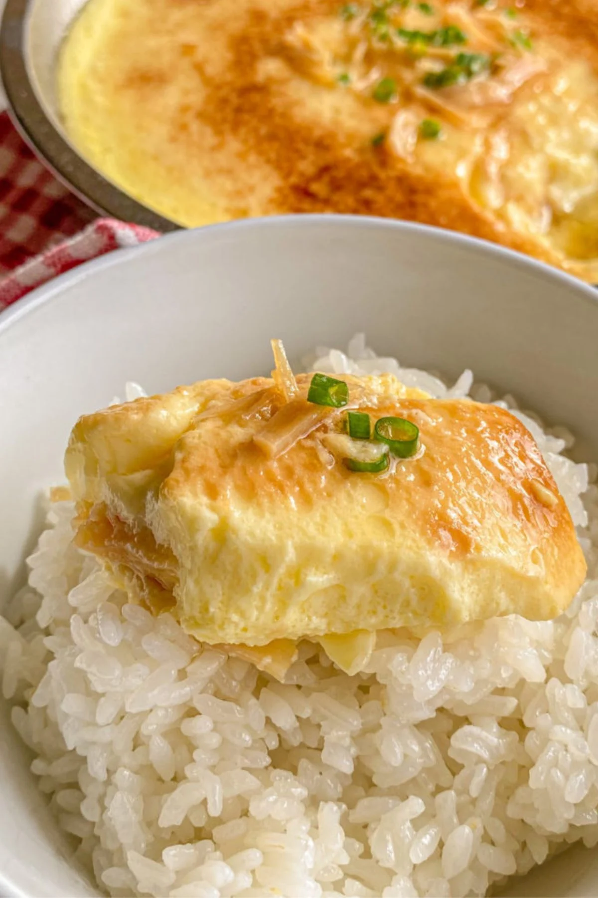

Home
Chinese Steamed Egg

Description
This Chinese steamed egg recipe (蒸蛋) tastes savory and has a soft and silky texture. My family's tips and tricks
ensure that this steamed egg comes out perfect every time. We top the eggs with soy sauce and eat this dish with
rice for a healthy and easy meal!
Ingredients
- 3 eggs beaten
- 1¼ cup warm water
- 1 teaspoon corn starch
- ½ teaspoon sugar
- ½ teaspoon salt
- ½ tablespoon olive oil
- half green onion sliced
- ½ tablespoon knorr seasoning or preferred soy sauce
Steps
Steam bowl
- Boil water in a large pot. Then, add your wire rack and an empty bowl to the large pot. Add ½ tablespoon olive
oil in the bowl. Steam your bowl (without the egg) for 5 minutes on medium high heat.
- In a mixing bowl, whisk 3 eggs with sugar and salt, and corn starch. Then, add 1 & ¼ cup warm water (30-45 C or
86-113F) to the eggs and whisk well.
Steam eggs
- Make sure the water is already boiling. Then, sift the egg mixture in the hot bowl.
- After the egg mixture has been added to the hot bowl, use a bowl or plate to cover the eggs. Steam on medium
high heat for 6-7 minutes.
- Turn off the heat. Rest the steamed egg by letting it sit in the pot for 5 minutes covered. Don't open the lid.
- Take the egg bowl out with oven mitts or towel. Garnish with sliced green onions and soy sauce to taste.